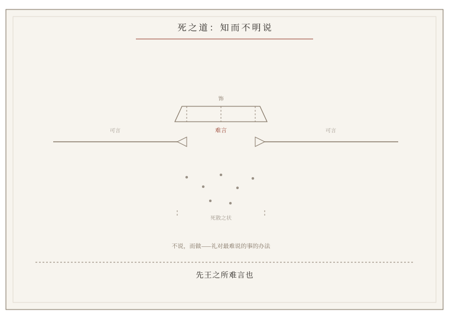

檀弓下 · 四·三十四 · 第 359 课
丧有死之道焉，先王之所难言也。
说什么事：丧事之中，有一个「死」的过程在，它就是人散坏的样子；这件事，先王知道，却不肯明说。
落在哪一层：以「言与不言」量礼。论礼对最难说的事，采取的是「不说，而做」。
为何编在此位：上节刚记了巫祝桃茢——一套因「恶之」而设的仪。此节遂点破那「恶」的来处。两节实为一事之表里。
【经】喪有死之道焉，先王之所難言也。
【注】言人之死，有如鳥獸死之狀。鳥獸之死，人賤之。聖人不明說，為人甚惡之。
【疏】此一节论先王恐生者恶死者之事。言人之丧也，有如鸟兽死散之道焉。／「先王之所难言」，死散之义。若言其死散，则人之所恶，故难言也。
死之道 死的过程、死的路径。疏云「死散之道」，谓形散而气绝。
如鸟兽死之状 注语。谓人死之后，形体所归，与鸟兽之死同一理，无贵贱之别。
贱之 轻贱、厌弃。注云「鸟兽之死，人贱之」。
难言 知道而不忍说、不肯明说。非不知。
不明说 圣人不把此事写在礼书之上。
甚恶之 人极厌恶此事，故圣人替他留一层遮护。
丧事之中有「死」这件事在——人散坏的样子与鸟兽无异。这件事，先王是知道的，却难以明说。
此章只一句，却是全卷最重的一句。
它承认了两件事：一，死有一个难看的过程；二，先王知道而选择不说。
礼的许多繁复，其来处即在此。
第一层 「死之道」三字的分量 礼书多言「丧」而不言「死」。此节偏偏说「丧有死之道」。
一字之差，层次全变：丧是人的事，死是自然的事。丧可议，死不可议。
注说得极直：人之死，有如鸟兽死之状。
第二层 为什么「难言」 疏解「难言」为「若言其死散，则人之所恶」。
难言不是不会说，是说了伤人。此语之难，不在文辞，在听的人受不住。
故「难言」是一种保护，不是一种隐瞒。 二者分别极大：隐瞒是怕自己受累，难言是怕对方受伤。
第三层 礼：把「难言」做成「可做」 先王既不说不出口，便把它做成仪节。
于是有绞衾以饰尸，有蒌翣以饰棺，有奠有祭以续其饮食。下文子游说得明白：「人死斯恶之矣，无能也，斯倍之矣。是故制绞衾，设蒌翣，为使人勿恶也。」
礼在这里的工作，不是解释死亡，是让人能待在死亡旁边。
第四层 圣人的沉默 注云「圣人不明说」。此一「不」字，是礼的立法原则之一。
凡最伤人之事，礼不与之争辩，只与之安排。故礼书言器、言位、言时、言辞，独于此一节止于一句「有死之道焉」。
今日之文，多喜把一切说尽。说尽之后，人却无处可站。古人留一分不说，正是留一分可站之地。
第五层 今日之用：把死亡移出视野，是另一种难言 今人处理死亡，多用「专业外包」：病房、太平间、殡仪馆，一层一层隔开。
这未必是错。但隔开之后，人往往连「难言」的那一句也失了：不知自己在回避什么，只知道不愿靠近。
古人比他诚实一分：他知道自己在回避什么，故设器设饰，正面绕过去。
与今日何干 凡遇至痛之事，不必强求说清。可以不说，但要有所安排——一顿饭、一件衣、一次到场。安排即是言。
| 左 | 右 |
|---|---|
| 丧 | 人的事，可议 |
| 死之道 | 自然的事，难言 |
| 死散 | 形散气绝 |
| 如鸟兽死之状 | 形体所归，无别 |
| 贱之 | 人所厌弃 |
| 难言 | 知而不忍说 |
| 不明说 | 不入礼书之文 |
| 甚恶之 | 人极厌之 |
| 绞衾蒌翣 | 礼替人遮一层 |
画面主体是一条横贯的长线，表示「可言者」。线的中段断开，缺口宽约画面的四分之一，缺口处不画任何连接。缺口的下方，画一小堆散落的细点与两段短线，示「死散之状」，形体不具。缺口的上方，画一方垂下的布帛，两端略垂，覆在缺口之上而不触及下方散点，示「饰」。全画只有这三层：长线、散点、垂布。不画人物。赭色只用在垂布的一道褶线。
